install.packages("gapminder") Visualizing Data
CS&SS 508 • Lecture 2
10 October 2023
Victoria Sass
Roadmap
Last time, we learned about:
- R and RStudio
- Quarto headers, syntax, and chunks
- Basics of functions, objects, and vectors
- Dataframes and basic plots
. . .
Today, we will cover:
- Useful coding tips: packages, directories, and saving data
- Basics of ggplot: layers and aesthetics
- Advanced ggplot tools
Useful Coding Tips
Packages
Packages are collections of functions and tools that make your life easier! The best part of R is the huge number of user-created packages. The Packages tab in the bottom-right pane of RStudio lists your installed packages.
. . .
To install a new package in R, run the line of code:
We always install packages in the console, because we only want to do it once
Loading Packages
Installing a packages does not mean it’s loaded in our R session. To do so, we call the package:
library(gapminder)NOTE: Use quotes when installing packages, but not when loading packages!
. . .
We need to run this code every time we open a new R session: Where should we put this code?
. . .
Answer: In qmd files, and not the console!
File Types
We mainly work with three types of file in this class:
. . .
.qmd: These are markdown syntax files, where you write code to make documents.
. . .
.R: These are R syntax files, where you write code to process and analyze data without making an output document1.
1 While beyond the scope of this class, you can use the source() function to run a .R script file inside a .qmd or .R file. Using this you can break a large project up into multiple files but still run it all at once!
. . .
.htmlor.pdf: These are the output documents created when you Render a quarto markdown document.
. . .
Make sure you understand the difference between the uses of these file types! Please ask for clarification if needed!
Gapminder Data
We’ll be working with data from Hans Rosling’s Gapminder project. An excerpt of these data can be accessed through an R package called gapminder, cleaned and assembled by Jenny Bryan at UBC.
. . .
In the console: install.packages("gapminder")
Load the package and data:
library(gapminder)Check Out Gapminder
The data frame we will work with is called gapminder, available once you have loaded the package. Let’s see its structure:
str(gapminder)tibble [1,704 × 6] (S3: tbl_df/tbl/data.frame)
$ country : Factor w/ 142 levels "Afghanistan",..: 1 1 1 1 1 1 1 1 1 1 ...
$ continent: Factor w/ 5 levels "Africa","Americas",..: 3 3 3 3 3 3 3 3 3 3 ...
$ year : int [1:1704] 1952 1957 1962 1967 1972 1977 1982 1987 1992 1997 ...
$ lifeExp : num [1:1704] 28.8 30.3 32 34 36.1 ...
$ pop : int [1:1704] 8425333 9240934 10267083 11537966 13079460 14880372 12881816 13867957 16317921 22227415 ...
$ gdpPercap: num [1:1704] 779 821 853 836 740 ...What’s Interesting Here?
Factor variables
countryandcontinent- Factors are categorical data with an underlying numeric representation
- We’ll spend a lot of time on factors later!
. . .
- Many observations: \(n=1704\) rows
. . .
- For each observation, a few variables: \(p=6\) columns
. . .
A nested/hierarchical structure:
yearincountryincontinent- These are panel data!
Base R plot
China <- gapminder |>
filter(country == "China")
plot(lifeExp ~ year,
data = China,
xlab = "Year",
ylab = "Life expectancy",
main = "Life expectancy in China",
col = "red",
pch = 16)This plot is made with one function and many arguments.
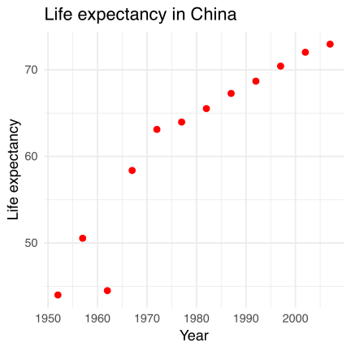
Note: Don’t worry about the code used to create the object China. We’ll explore data manipulation in a couple weeks!
Fancier: ggplot
ggplot(data = China,
aes(x = year, y = lifeExp)) +
geom_point(color = "red", size = 3) +
xlab("Year") +
ylab("Life expectancy") +
ggtitle("Life expectancy in China") +
theme_bw(base_size=18)This ggplot is made with many functions and fewer arguments in each.
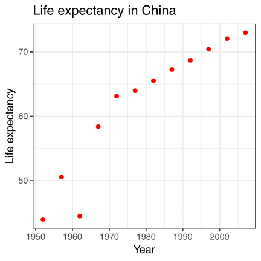
ggplot2
The ggplot2 package provides an alternative toolbox for plotting.
# install.packages("ggplot2")
library(ggplot2)The core idea underlying this package is the layered grammar of graphics: i.e. we can break up elements of a plot into pieces and combine them.
. . .
ggplots are a bit harder to create, but are usually:
- prettier
- more professional
- more customizable
Layered grammar of graphics

Structure of a ggplot
ggplot graphics objects consist of two primary components:
. . .
Layers, the components of a graph.
- We add layers to a
ggplotobject using+. - This includes adding lines, shapes, and text to a plot.
- We add layers to a
. . .
Aesthetics, which determine how the layers appear.
- We set aesthetics using arguments (e.g.
color="red") inside layer functions. - This includes modifying locations, colors, and sizes of the layers.
- We set aesthetics using arguments (e.g.
Aesthetic vignette
Learn more about all possible aesthetic mappings here.
Layers
Layers are the components of the graph, such as:
ggplot(): initializes basic plotting object, specifies input datageom_point(): layer of scatterplot pointsgeom_line(): layer of linesgeom_histogram(): layer of a histogramggtitle(),xlab(),ylab(): layers of labelsfacet_wrap(): layer creating multiple plot panelstheme_bw(): layer replacing default gray background with black-and-white
Layers are separated by a + sign. For clarity, I usually put each layer on a new line.
Syntax warning
Be sure to end each line with the +. The code will not run if a new line begins with a +.
Aesthetics
Aesthetics control the appearance of the layers:
x,y: \(x\) and \(y\) coordinate values to usecolor: set color of elements based on some data valuegroup: describe which points are conceptually grouped together for the plot (often used with lines)size: set size of points/lines based on some data value (greater than 0)alpha: set transparency based on some data value (between 0 and 1)
Examples: Basic Jargon in Action!
We’ll now build up two ggplots together that demonstrate common layers and aesthetics.
Axis Labels, Points, No Background
Base ggplot
Initialize the plot with ggplot() and x and y aesthetics mapped to variables. These aesthetics will be accessible to any future layers since they’re in the primary layer.
Axis Labels, Points, No Background
Scatterplot
Add a scatterplot layer.
Axis Labels, Points, No Background
Point Color and Size
Set aesthetics to make the points larger and red.
Axis Labels, Points, No Background
X-Axis Label
Add a layer to capitalize the x-axis label.
Axis Labels, Points, No Background
Y-Axis Label

Add a layer to clean up the y-axis label.
Axis Labels, Points, No Background
Title
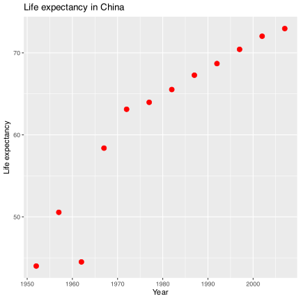
Add a title layer.
Axis Labels, Points, No Background
Theme

Pick a nicer theme with a new layer.
Axis Labels, Points, No Background
Text Size

Increase the base text size.
Plotting All Countries
We have a plot we like for China…
… but what if we want all the countries?
Plotting All Countries
A Mess!
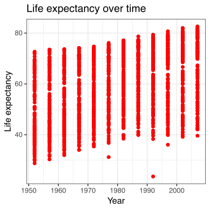
We can’t tell countries apart! Maybe we could follow lines?
Plotting All Countries
Lines
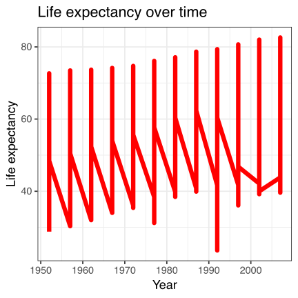
ggplot2 doesn’t know how to connect the lines!
Plotting All Countries
Grouping

That looks more reasonable… but the lines are too thick!
Plotting All Countries
Size
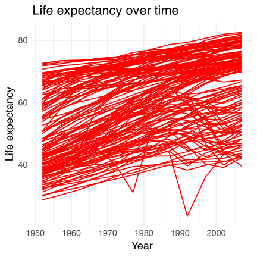
Much better… but maybe we can do highlight regional differences?
Plotting All Countries
Color
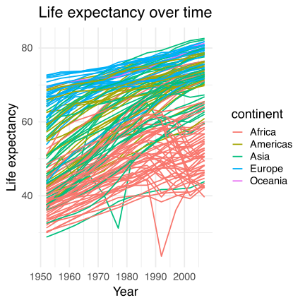
Patterns are obvious… but it might be even more impactful if we separate continents completely.
Plotting All Countries
Facets
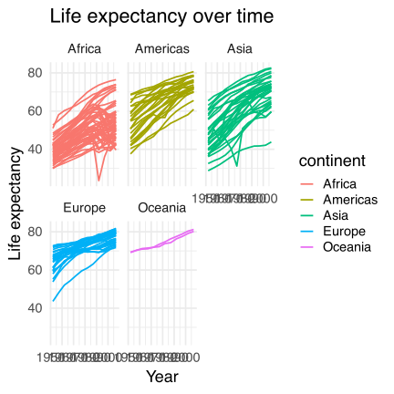
Now the text is too big!
Plotting All Countries
Text Size
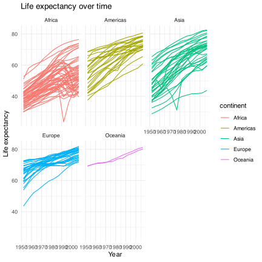
Better. Do we even need the legend anymore?
Plotting All Countries
No Legend
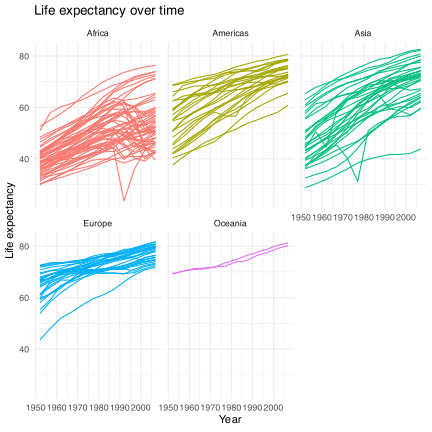
Looking good!
Advanced ggplot tools
(10 minute break!)
Next, we’ll discuss:
Storing, modifying, and saving ggplots
Advanced axis changes (scales, text, ticks)
Legend changes (scales, colors, locations)
Storing Plots
We can assign a ggplot object to a name:
lifeExp_by_year <-
ggplot(data = gapminder,
aes(x = year, y = lifeExp,
group = country,
color = continent)) +
geom_line() +
xlab("Year") +
ylab("Life expectancy") +
ggtitle("Life expectancy over time") +
theme_bw() +
facet_wrap(vars(continent)) +
theme(legend.position = "none")Afterwards, you can display or modify ggplots…
Showing a Stored Graph
lifeExp_by_year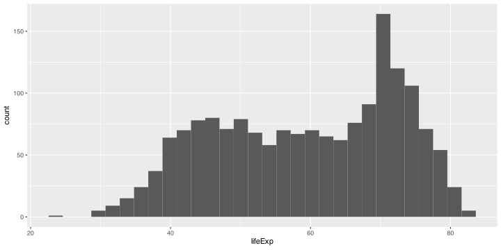
Overriding previous specifications
Adding More Layers
Saving ggplot Plots
If you want to save a ggplot, use ggsave():
ggsave("I_saved_a_file.pdf", plot = lifeExp_by_year,
height = 3, width = 5, units = "in")If you didn’t manually set font sizes, these will usually come out at a reasonable size given the dimensions of your output file.
Changing the Axes
We can modify the axes in a variety of ways, such as:
Change the \(x\) or \(y\) range using
xlim()orylim()layersChange to a logarithmic or square-root scale on either axis:
scale_x_log10(),scale_y_sqrt()Change where the major/minor breaks are:
scale_x_continuous(breaks =, minor_breaks = )
Axis Changes
Precise Legend Position
lifeExp_by_year +
theme(legend.position = c(0.8, 0.2)) 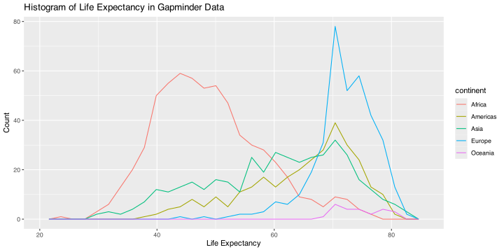
Instead of coordinates, you could also use “top”, “bottom”, “left”, or “right”.
Scales for Color, Shape, etc.
Scales are layers that control how the mapped aesthetics appear.
You can modify these with a scale_[aesthetic]_[option]() layer:
. . .
[aesthetic]iscolor,shape,linetype,alpha,size,fill, etc.
. . .
[option]is something likemanual,continuousordiscrete(depending on nature of the variable).
. . .
Examples:
scale_linetype_manual(): manually specify the linetype for each different valuescale_color_manual(): manually specify colors
Legend Name and Manual Colors
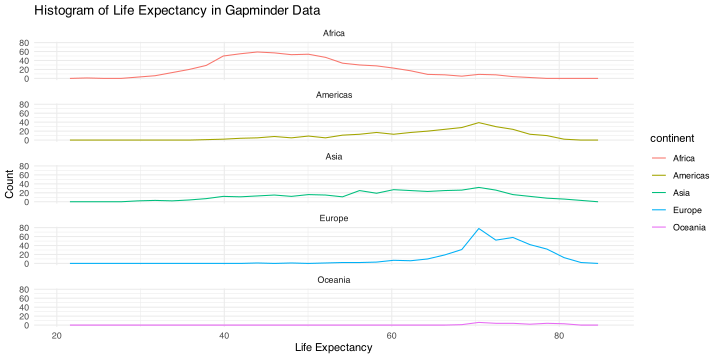
Note
This scale arguement knows to “map” onto continent because it is specified as an aesthetic in our original ggplot object.
Bonus: Advanced Example!
End Result
We’re going to slowly build up a really detailed plot now!
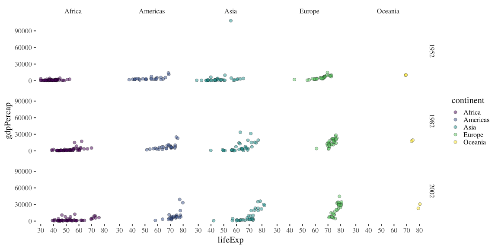
Base ggplot
What might be a good geom layer for this data?
Lines
Let’s add a continent-specific average so we can visualize country-deviations from the regional average.
Continent Average

A loess curve is something like a moving average.
Facets
Facets allow us to gain a clearer understanding of the regional patterns.
We want to differentiate the continent-average line from the country-specific lines so let’s change it’s color.
Color Scale
It’s hard to see when it’s thickness is not also differentiated. Let’s change that.
Size Scale
ggplot(data = gapminder,
aes(x = year, y = lifeExp, group = country)) +
geom_line() +
geom_line(stat = "smooth",
method = "loess",
aes(group = continent)) +
facet_wrap(~ continent,
nrow = 2) +
scale_color_manual(name = "Life Exp. for:",
values = c("Country" = "black", "Continent" = "blue")) +
scale_size_manual(name = "Life Exp. for:",
values = c("Country" = 0.25, "Continent" = 3))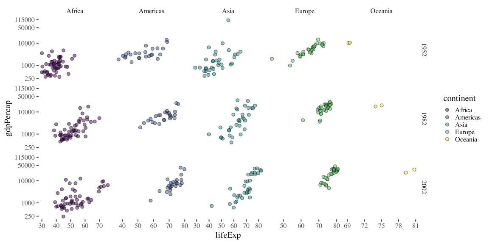
Alpha (Transparency)
ggplot(data = gapminder,
aes(x = year, y = lifeExp, group = country)) +
geom_line(alpha = 0.5,
aes(color = "Country", size = "Country")) +
geom_line(stat = "smooth", method = "loess",
aes(group = continent, color = "Continent", size = "Continent"),
alpha = 0.5) +
facet_wrap(~ continent, nrow = 2) +
scale_color_manual(name = "Life Exp. for:",
values = c("Country" = "black", "Continent" = "blue")) +
scale_size_manual(name = "Life Exp. for:",
values = c("Country" = 0.25, "Continent" = 3))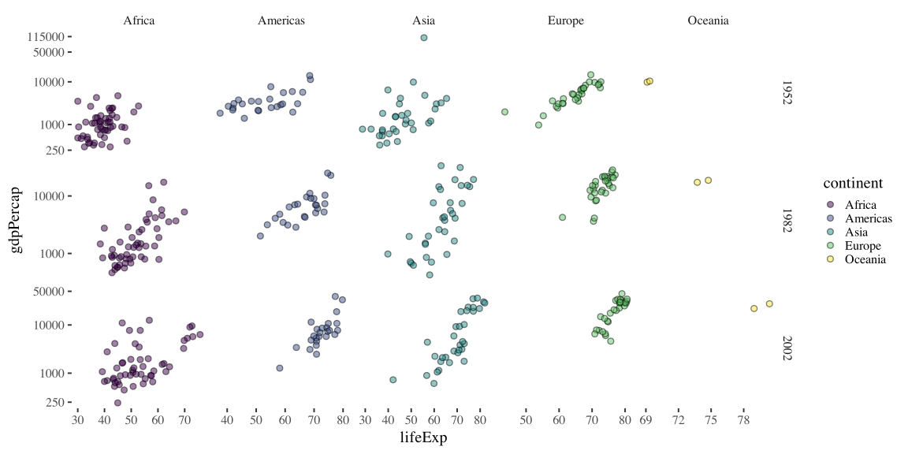
Now we’re getting somewhere! We can also add useful labels and clean up the theme.
Theme and Labels
ggplot(data = gapminder,
aes(x = year, y = lifeExp, group = country)) +
geom_line() +
geom_line(stat = "smooth",
method = "loess",
aes(group = continent)) +
facet_wrap(~ continent,
nrow = 2) +
scale_color_manual(name = "Life Exp. for:",
values = c("Country" = "black", "Continent" = "blue")) +
scale_size_manual(name = "Life Exp. for:",
values = c("Country" = 0.25, "Continent" = 3)) +
theme_minimal(base_size = 14) +
ylab("Years") +
xlab("")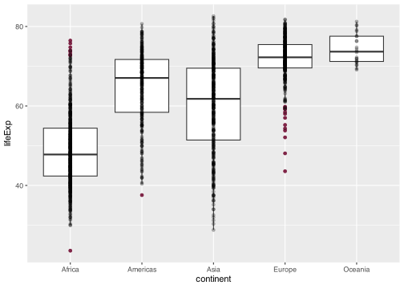
What’s our plot showing? We should be explicit about that.
Title and Subtitle
ggplot(data = gapminder,
aes(x = year, y = lifeExp, group = country)) +
geom_line() +
geom_line(stat = "smooth",
method = "loess",
aes(group = continent)) +
facet_wrap(~ continent,
nrow = 2) +
scale_color_manual(name = "Life Exp. for:",
values = c("Country" = "black", "Continent" = "blue")) +
scale_size_manual(name = "Life Exp. for:",
values = c("Country" = 0.25, "Continent" = 3)) +
theme_minimal(base_size = 14) +
ylab("Years") +
xlab("") +
ggtitle("Life Expectancy, 1952-2007",
subtitle = "By continent and country")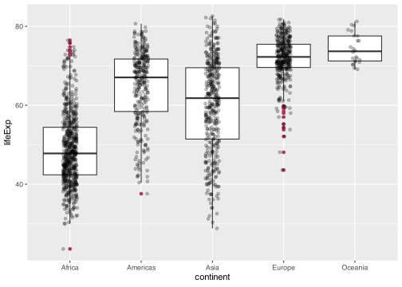
The x-axis feels a little busy right now…
Angled Tick Values
ggplot(data = gapminder,
aes(x = year, y = lifeExp, group = country)) +
geom_line() +
geom_line(stat = "smooth",
method = "loess",
aes(group = continent)) +
facet_wrap(~ continent,
nrow = 2) +
scale_color_manual(name = "Life Exp. for:",
values = c("Country" = "black", "Continent" = "blue")) +
scale_size_manual(name = "Life Exp. for:",
values = c("Country" = 0.25, "Continent" = 3)) +
theme_minimal(base_size = 14) +
ylab("Years") +
xlab("") +
ggtitle("Life Expectancy, 1952-2007",
subtitle = "By continent and country") +
theme(axis.text.x = element_text(angle = 45)) 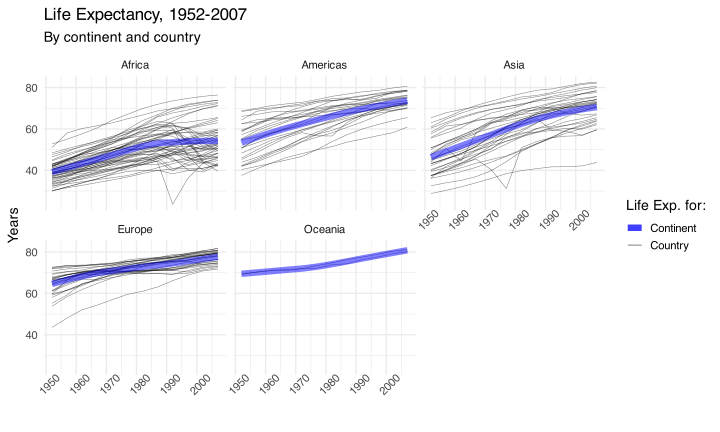
. . .
Note: Fewer values might be better than angled labels!
Legend Position
ggplot(data = gapminder,
aes(x = year, y = lifeExp, group = country)) +
geom_line() +
geom_line(stat = "smooth",
method = "loess",
aes(group = continent)) +
facet_wrap(~ continent,
nrow = 2) +
scale_color_manual(name = "Life Exp. for:",
values = c("Country" = "black", "Continent" = "blue")) +
scale_size_manual(name = "Life Exp. for:",
values = c("Country" = 0.25, "Continent" = 3)) +
theme_minimal(base_size = 14) +
ylab("Years") +
xlab("") +
ggtitle("Life Expectancy, 1952-2007",
subtitle = "By continent and country") +
theme(legend.position=c(0.82, 0.15),
axis.text.x = element_text(angle = 45))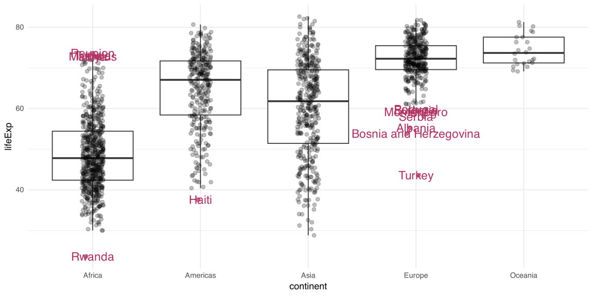
Voilà!
Summary
Summary
ggplot2 can do a LOT! I won’t expect you to memorize all these tools, and neither should you!
With time and practice, you’ll start to remember the key tools
When in doubt, Google it! (i.e. “R ggplot ‘whatever issue you need help with’”)
There are lots of great resources out there:
Kieran Healy’s book Data Visualization: A Practical Introduction (right) is targeted at social scientists without technical backgrounds and uses the same tools we’ll be learning in this class.

Exercise: Histograms
In pairs, you will create a histogram of life expectancy observations in the complete Gapminder dataset.
Set the base layer by specifying the data as
gapminderand the x variable aslifeExpAdd a second layer to create a histogram using the function
geom_histogram()Customize your plot with nice axis labels and a title.
Solution
1: Set Base Layer
ggplot(gapminder,aes(x=lifeExp))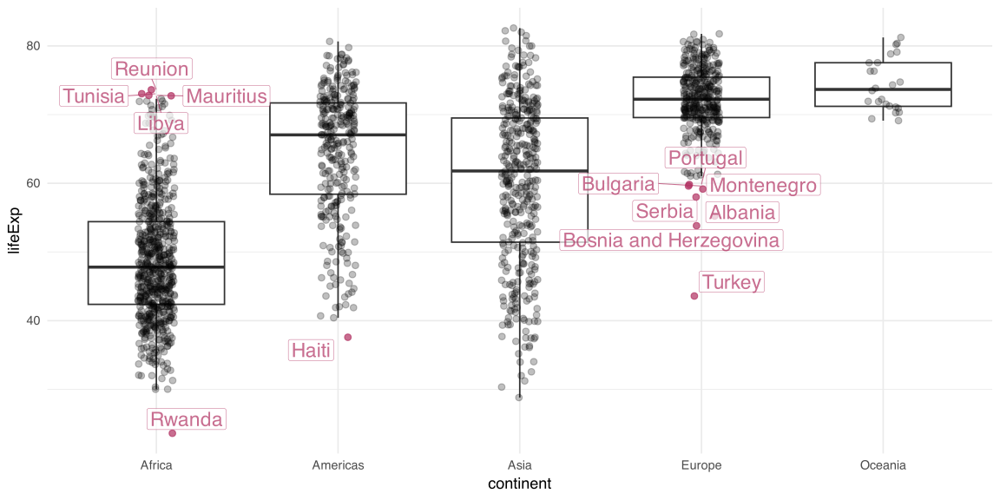
Solution
2: Add Histogram Layer
ggplot(gapminder,aes(x=lifeExp))+
geom_histogram(bins=30)Setting the bins aesthetic removes a pesky message!]
Solution
3: Add Label Layers
ggplot(gapminder,aes(x=lifeExp))+
geom_histogram(bins=30)+
xlab("Life Expectancy")+
ylab("Count")+
ggtitle("Histogram of Life Expectancy in Gapminder Data")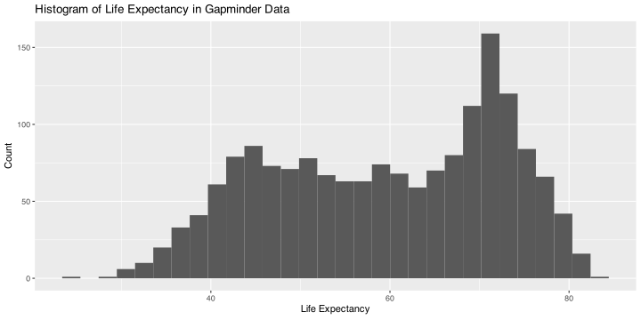
Homework
Homework #2
In this homework, you’ll pose a question regarding the Gapminder dataset and investigate it graphically.
- At the beginning of your document, write down a research question that is based on the Gapminder dataset (e.g., “How does population change over time in different countries?”)
- Create 3-6 plots to answer/investigate your research question. Consider histograms (
geom_histogram()), scatterplots (geom_point()), or lineplots (geom_line()). - Be sure all titles, axes, and legends are clearly labelled (no raw variable names).
- Include at least one plot with
facet_wrap()orfacet_grid(). - You can use other
geomslike histograms, bar charts, adding meaningful vertical or horizontal lines, etc. You may find this data visualization cheat sheet helpful.
Your document should be pleasant for a peer to look at, with some organization. You must write up your observations in words as well as showing the graphs. Upload both the .qmd file and the .html file to Canvas.
Due dates
| # | Section AA | Section AB | ||
|---|---|---|---|---|
| Homework Due | Peer Review Due | Homework Due | Peer Review Due | |
| 1 | 10 October | 15 October | 12 October | 17 October |
| 2 | 17 October | 22 October | 19 October | 24 October |
| 3 | 24 October | 29 October | 26 October | 31 October |
| 4 | 31 October | 5 November | 2 November | 7 November |
| 5 | 7 November | 12 November | 9 November | 14 November |
| 6 | 14 November | 19 November | 16 November | 21 November |
| 7 | 21 November | 26 November | 23 November | 28 November |
| 8 | 28 November | 3 November | 30 November | 5 November |
| 9 | 5 December | 10 December | 7 December | 12 December |